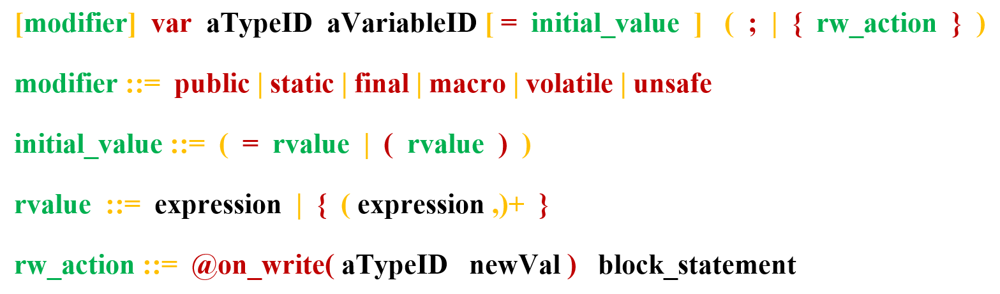

Variables
Variables are objects that represent a type and a value. For instance the couple (INTEGER,2) which informs us that we face an integer of value 2, is a variable.
In XLIA, a variable must belong to a parent machine. Machines use variables to keep track of things, to compute things...
General Variable Declaration
Every variable used in a machine must be previously declared, and it can be initialized with an expression. The general syntax is the following (see BNF syntax) :

Where, in order of apparition :
- "modifier" can be one, none (depending on declaration context), or any sequence of the following keywords :
- "public"
- "private"
- "static"
- "final"
- "macro"
- "volatile"
- "unsafe"
- "transient"
- "var" is the mandatory non-modifiable keyword to declare variables (highlighted in the editor)
- "aTypeID" is a string that matches a property type name known by the machine (see types)
- "aVariableID" is the name you want the variable to have
- "[=initial_value]" is an optional way of initializing the variable with a hard value either by:
- writing a hard-coded value
- writing an expression between brackets that can include more complex operations with other known variables
- "( ; | {rw_action})" means that we can either :
- put a ";" sign and end the declaration
- specify a set of behaviors linked to this variable between the brackets. Those behaviors can for instance be actions that are triggered when Diversity rewrite the value of the variable (hence "rw_action")
This general presentation will be extended and given more detail with examples in the following.
Variables Modifiers
Please refer to Variables Modifiers.
Initial Value
Initial values of variables can be given, either with raw values, or by evaluating an expression at the beginning of the simulation. For instance :
Variable Behaviors
Please refer to Variable Behaviors.